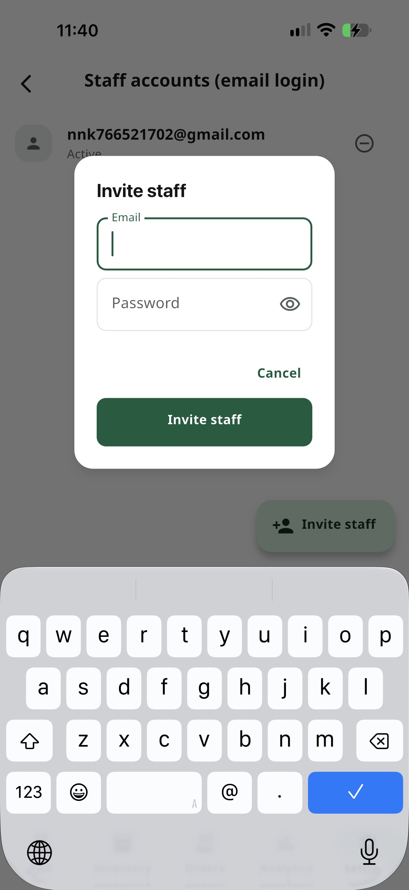
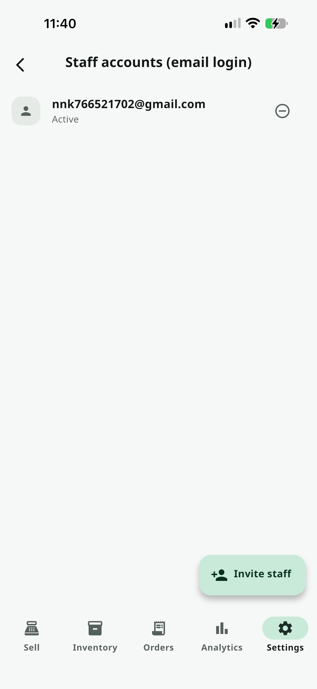

ဝန်ဆောင်မှုများ အားလုံး / ဝန်ထမ်း Account
ဝန်ထမ်း Account
Premiumဝန်ထမ်းတစ်ဦးချင်းစီအား လူတိုင်းမျှဝေနေသော PIN တစ်ခုတည်း အစား သီးခြား Email + Password Login ပေးနိုင်ပါတယ် — Device မည်သည့်ခုမှမဆို Login ဝင်နိုင်ပြီး Access ကို ချက်ချင်းနှင့် Remote ကနေ ဖြတ်တောက်နိုင်ပါတယ်။
အဆင့်ဆင့် အသုံးပြုနည်း

ဝန်ထမ်းတစ်ဦးကို ဖိတ်ခေါ်ပါ
ဆက်တင် → ဝန်ထမ်း Account သို့ ဝင်ပါ — ဒီစာမျက်နှာကို ဖွင့်ရန် Owner အဖြစ် Login ဝင်ထားပြီးသားဖြစ်လျှင်ပင် Owner PIN ကို ထပ်မံ တောင်းဆိုပါလိမ့်မည်။ "ဝန်ထမ်း ဖိတ်ခေါ်မည်" ကို နှိပ်ပြီး Email နှင့် Password ကို ဖြည့်ပါ — အမည် (သို့) Role ရွေးရန် မလိုအပ်ပါ၊ ဖိတ်ခေါ်သော Account အားလုံးသည် Staff Role တစ်ညီတည်း ရရှိမည်ဖြစ်သည်။

စာရင်းကို စီမံပြီး လိုအပ်ပါက ချက်ချင်း ဖြတ်တောက်ပါ
ဖိတ်ခေါ်ထားသော Account တစ်ခုစီကို Active (သို့) Revoked အဖြစ် စာရင်းတွင် ပြသထားသည်။ Active Account ပေါ်ရှိ အနီရောင် Minus ခလုတ်ကို နှိပ်ပြီး အတည်ပြုလိုက်ပါက ချက်ချင်း Server ဘက်မှ တကယ့် အာနိသင်ရှိစွာ ဖြတ်တောက်လိုက်ပါလိမ့်မည် — ထိုသူသည် မည်သည့်နေရာမှမျှ Login နောက်ထပ် ဝင်၍ မရတော့ပါ၊ ၎င်း၏ Device ကို လက်ဆွဲစရာမလိုပါ။
သိထားသင့်တဲ့ Tips
Staff Accounts vs. အခမဲ့ PIN Roster — အခမဲ့ PIN Roster (ဝန်ထမ်းတစ်ဦးစီအတွက် ဂဏန်း ၄-၆ လုံး PIN) သည် Device တစ်ခုအတွင်းသာ — သင့်ဖုန်းတစ်လုံးကို Lock ချထားပြီး ဘယ်သူ ရောင်းသလဲ Tag လုပ်ရုံသာ ဖြစ်ပြီး Offline မှာလည်း အလုပ်လုပ်သည်။ Staff Accounts မှာမူ Device မည်သည့်ခုမှမဆင့် အလုပ်လုပ်နိုင်သော တကယ့် Online Login ဖြစ်ပြီး Login ဝင်ရန် Internet လိုအပ်သည်။
နှစ်ခုစလုံး တွဲသုံးနိုင်သည် — အခမဲ့ PIN Roster ကတော့ "ငါ့ Register တစ်လုံးမှာ ဘယ်သူ ရောင်းသလဲ" ဆိုသည့် သဘောမျိုးအတွက် အသင့်တော်ဆုံးဖြစ်ပြီး Staff Accounts ကတော့ Register/ဖုန်း တစ်လုံးထက်ပိုသော ဆိုင်များအတွက် Remote ဖြတ်တောက်နိုင်သော Login အစစ်များအတွက် ဖြစ်သည်။
Permission အဆင့် မခွဲရသေးပါ — ဖိတ်ခေါ်ထားသော ဝန်ထမ်း Account အားလုံးသည် Access တူညီစွာ ရရှိပြီး "ရောင်းချမှုသာ" ကဲ့သို့ ဝန်ထမ်းတစ်ဦးချင်း ကန့်သတ်ချက် ယနေ့အချိန်ထိ မရှိသေးပါ။
All In One POS ကို ယနေ့ပင် စမ်းကြည့်ပါ
2 လ အခမဲ့ စမ်းသပ်ကာလ — Card မလို၊ Sign up မလို။
ဒေါင်းလုပ်ဆွဲမည်